地政学
バンコクはタイ湾奥の低地にあり、王宮、政府、軍、港湾、空港を結ぶ首都機能が東南アジア大陸部の政治と物流を支える。周辺国との陸路、海路、移民労働も都市の厚みを作る。王室儀礼も街の距離感を細かく形づくる。

🇹🇭 タイ / アジア / World City Atlas
王宮、仏教寺院、運河、屋台、高架鉄道、工場物流、観光消費が低地の暑熱に重なる、東南アジア有数の巨大首都圏。
都市の骨格
王権と仏教、運河と道路、高架鉄道と郊外工業地が、暑熱と洪水に向き合いながら一つの巨大な生活圏を形づくる。
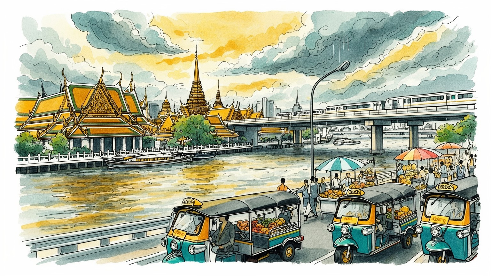
バンコクはタイ湾奥の低地にあり、王宮、政府、軍、港湾、空港を結ぶ首都機能が東南アジア大陸部の政治と物流を支える。周辺国との陸路、海路、移民労働も都市の厚みを作る。王室儀礼も街の距離感を細かく形づくる。
観光、金融、小売、医療、食品、物流、行政が集まり、郊外の工場、屋台、ホテル、配送、家事労働、建設現場まで連動する。公式経済と非公式経済が隣り合う巨大な労働都市だ。技能差と在留資格も働き方を大きく分ける。
上座部仏教の寺院、王室儀礼、華人商業、精霊信仰、映画、音楽、屋台料理が同じ街路に重なる。祈りと商い、礼節と娯楽が近く、都市文化は柔らかく多層的である。祝祭と家族儀礼も街の季節感を静かに作っている。
高層住宅、路地、運河、ショッピングモール、ナイトマーケット、寺院観光が日常の移動と重なり合う。暑さ、渋滞、洪水、家賃の差は、旅の華やかさの裏にある生活の条件だ。住民の通勤と観光動線は毎日交差し続ける。
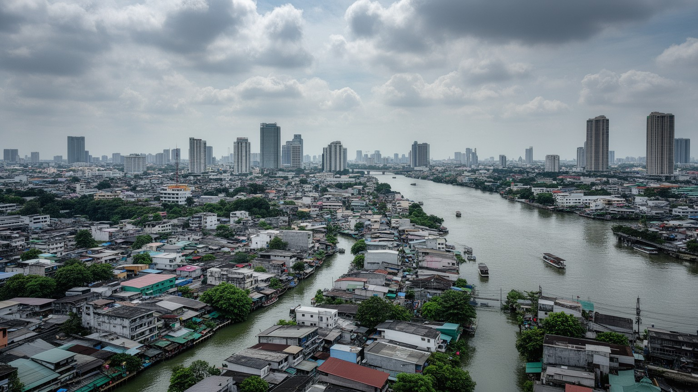
バンコクはチャオプラヤー川の下流低地に広がり、タイ湾へ向かう水の流れ、雨季の増水、運河網、埋め立てられた湿地の上に成長してきた。王宮や古い寺院は川沿いに置かれ、米、木材、陶器、香辛料、人びとの移動は長く水路に支えられた。近代化とともに道路、高架道路、鉄道、地下鉄が都市の骨格を変えたが、低地である事実は消えない。豪雨の日には排水の遅れ、路地の冠水、交通混乱が起こり、川沿いの住宅や市場は水位の変化を身近に感じる。都市の拡大は郊外の水田や湿地を住宅地、工業団地、物流施設へ変え、洪水を受け止める余地を狭めてもきた。川は観光船や夕景の舞台であると同時に、気候リスク、土地利用、貧困、再開発を結ぶ現実の線である。バンコクを読むには、寺院や高層ビルの点景だけでなく、水がどこを流れ、どこに溜まり、誰の住まいを先に脅かすのかを見なければならない。水上交通の復権や排水施設の更新は、懐かしい風景の保存ではなく、低地首都が将来も暮らせるかを左右する都市政策である。地域ごとの差は大きく、同じ雨でも都心のオフィス、郊外の住宅地、運河沿いの集落で被害と回復の速度は違う。水を避ける都市ではなく、水と折り合う都市として設計を更新できるかが問われている。堤防や排水路だけでなく、日常の移動、学校、病院、屋台営業を止めない細かな備えも都市の強さになる。
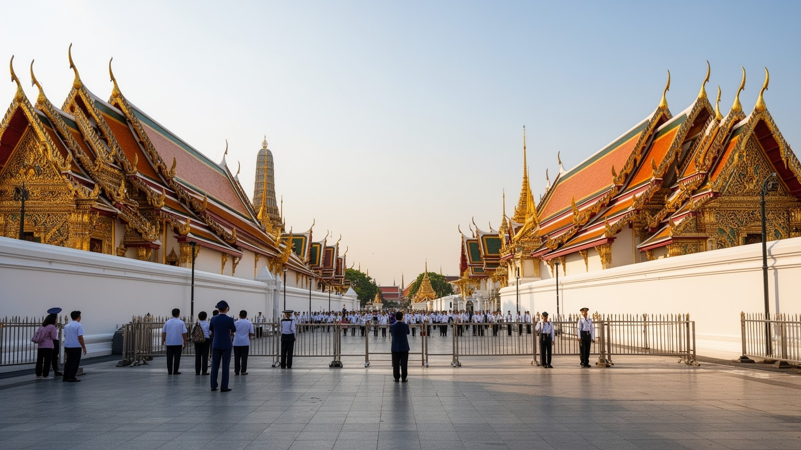
バンコクの中心には王宮、官庁、軍、裁判所、国会、記念碑が集まり、タイの政治的な緊張と儀礼を都市空間の中に刻んでいる。王室は宗教儀礼、国家行事、学校教育、日常の敬意表現を通じて強い象徴性を持ち、首都の景観や公共の振る舞いにも影響する。一方で、クーデター、憲法改正、選挙運動、学生デモ、地方と都市の政治的対立は、バンコクを単なる行政首都ではなく、国家の方向をめぐる争いの舞台にしてきた。ラチャダムヌン通りや民主記念塔、大学周辺、商業地区の交差点は、祝祭の場にも抗議の場にもなる。政治は議会や官庁の内部に閉じず、屋台の会話、SNS、寺院の行事、王室関連の休日、軍の存在感を通じて市民の日常に届く。首都への権力集中は行政の速さを生むが、地方の不満や格差も強める。バンコクを理解するには、王宮のきらびやかな外観だけでなく、誰が発言し、誰が沈黙し、どの広場が管理され、どの街路が政治的な記憶を持つのかを読み取る必要がある。観光客が訪れる儀礼空間の近くで、住民は国家と個人の距離を日々測っている。法律、教育、メディアの語彙も王室や国家観と結びつき、若い世代の政治参加はその境界を押し広げている。街路の秩序、警備、記念行事の動線まで、首都は権力の見え方を日常的に調整している。沈黙や遠回しな表現も政治文化の一部であり、都市の会話には慎重さと変化への期待が同時に漂う。
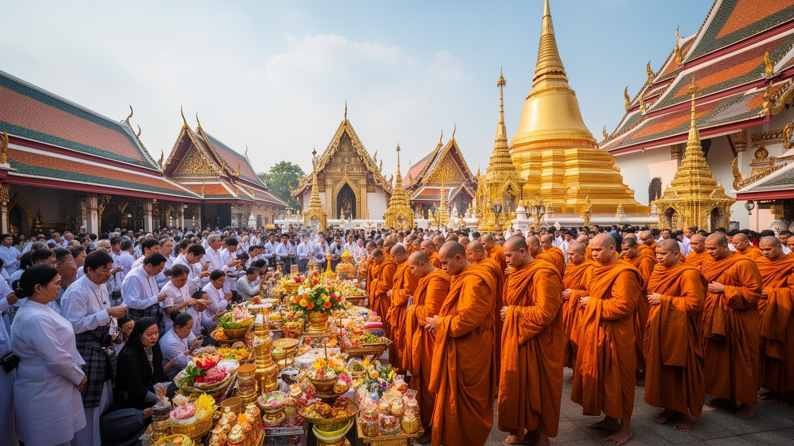
バンコクの仏教寺院は観光名所である前に、祈り、葬儀、布施、教育、地域の相談、年中行事を受け止める生活の場所である。ワット・プラケオ、ワット・ポー、ワット・アルンのような大寺院は王権や都市史を象徴するが、路地の小さな寺も朝の托鉢、祭礼、家族の供養、子どもの学びを支えている。上座部仏教の儀礼は、功徳を積む行為、僧侶への敬意、誕生日や命日の参拝、短期出家の経験を通じて、都市住民の時間感覚を形づくる。そこには華人寺院、ヒンドゥー系の祠、精霊信仰、イスラム教徒やキリスト教徒のコミュニティも重なり、信仰の地図は単純ではない。寺院の境内は暑さを避ける木陰であり、観光バスの停車場であり、屋台や花売りの仕事場でもある。宗教空間が観光化すると、祈りの静けさと写真を撮る視線が衝突することもある。バンコクの宗教を読むには、金色の仏塔の美しさだけでなく、日々の布施、葬儀費用、祭礼の準備、家族の記憶、商いとの結びつきを見る必要がある。寺院は過去を保存する建築ではなく、住民が不安や願いを持ち込む現役の公共空間である。出家や供養の習慣は地方から来た住民にも共有され、都会で孤立しがちな人を寺院が緩やかに受け止めることもある。僧侶、花売り、参拝者、観光客が交わる境内は、信仰と都市経済が同時に動く場所である。葬儀や祭礼の費用をめぐる負担も、宗教が家計と親族関係に深く関わることを示している。
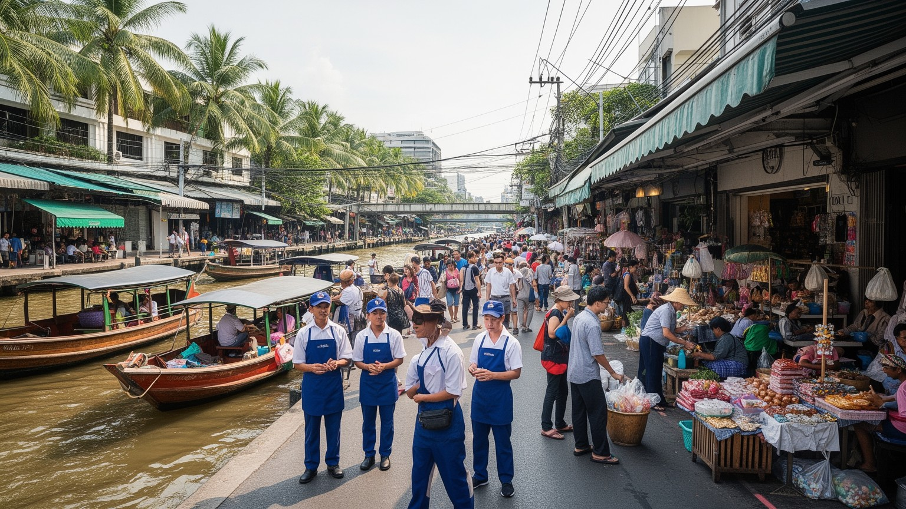
バンコクは世界有数の観光都市であり、王宮、寺院、チャオプラヤー川、屋台、マッサージ、ショッピングモール、ナイトマーケット、医療美容、ホテル、航空乗り継ぎを組み合わせて膨大な来訪者を受け入れる。観光は外貨を稼ぎ、飲食、交通、清掃、警備、通訳、ガイド、土産物、配達、イベント運営まで幅広い仕事を生む。しかし、華やかな都市イメージの裏側には、低賃金のサービス労働、季節変動、チップや歩合への依存、家賃上昇、性的搾取、観光地の過密、地域住民の静けさの喪失がある。旅行者にとって便利な英語表示や配車アプリ、深夜営業は、誰かが長い時間働くことで成立する。コロナ禍のように国際移動が止まると、観光依存の脆さはホテル街、屋台、タクシー、土産物市場にすぐ現れた。バンコク観光を読むには、安さや楽しさだけでなく、都市がどの労働に支えられ、利益がどこに残り、リスクが誰へ押し寄せるのかを見る必要がある。旅の消費は地域経済を動かす力であると同時に、生活の場を商品化する力でもある。観光都市としての強さは、訪問者と住民の双方が尊重される運営を作れるかにかかっている。近年は地域性のある小さな宿、料理教室、運河ツアー、アート地区を訪ねる旅も増え、観光の形は多様化している。だからこそ、短期滞在の消費が地域の生活費や文化の表現をどう変えるのかを丁寧に見る必要がある。案内や清掃の仕事まで含めて旅の質を考えることが、観光都市の成熟につながる。
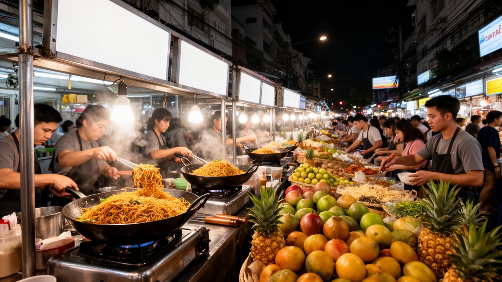
バンコクの食は、屋台、フードコート、市場、ショッピングモール、家庭料理、配達アプリが重なって成り立つ。朝の粥、昼の麺、夕方の焼き物、深夜の炒め物、甘い飲み物は、通勤者、学生、観光客、建設労働者、店員の時間を支える。屋台は安く早い食事を提供するだけでなく、小さな資本で始められる仕事、地域の顔なじみ、女性や移民の働く場、都市の匂いと音を生む文化でもある。一方で、歩道管理、衛生、交通、安全、観光地化、家賃上昇を理由に屋台が移動させられることも多い。整った歩道やモール型の食空間は便利だが、路上で育った食の柔軟さを失わせる可能性もある。市場では華人商人、地方から来た売り手、農産物の流通、寺院行事の供物、観光客向けの商品が混じり合う。食べることは味覚の問題だけでなく、誰が調理し、どこから食材が来て、どの規則が路上の仕事を許すのかという都市政治でもある。バンコクの屋台文化を守るとは、単に名物料理を残すことではない。低所得者が手頃に食べ、働き手が小商いを続けられ、歩行者も安全に移動できる余地を調整することである。近年は配達アプリや衛生規制によって営業の形が変わり、人気店は観光客の列を生む一方で、常連向けの小さな店は場所の確保に苦労する。食の豊かさは、規制、家賃、労働時間の均衡の上に成り立つ。調味料の香りや鍋の音は、都市の経済が路上で動いていることを知らせる合図でもある。
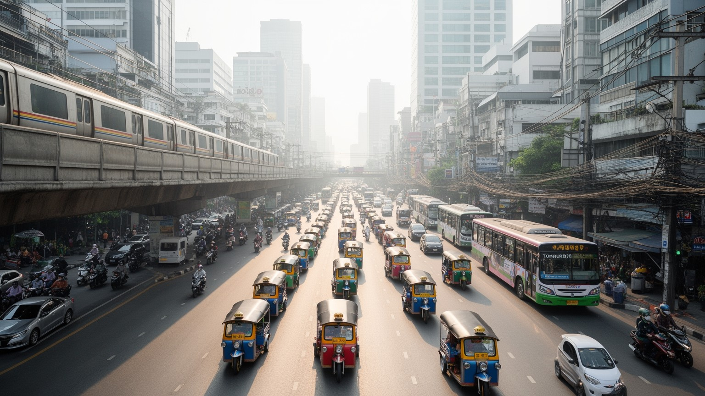
バンコクの移動は、BTSスカイトレイン、MRT、エアポートリンク、路線バス、ソンテウ、タクシー、トゥクトゥク、バイクタクシー、運河船、川の船が複雑に組み合わさる。高架鉄道と地下鉄は中心部の移動を大きく改善し、駅周辺には高層住宅、オフィス、モール、ホテルが集まった。しかし、路線が届かない地域では車やバイクへの依存が強く、朝夕の渋滞、排気ガス、歩道の狭さ、暑さの中の徒歩移動が生活の負担になる。バイクタクシーは渋滞を抜ける便利な手段だが、安全、料金、労働条件の問題を抱える。鉄道整備は都市を近代的に見せる一方、駅に近い土地の価格を押し上げ、低所得者を遠い場所へ押し出す力にもなる。運河船や川の船は古い水都の記憶を残しながら、通勤の実用的な選択肢でもある。バンコクの交通を読むには、路線図の拡大だけでなく、誰が冷房の効いた車両に乗れ、誰が暑い道路で待ち、誰が長距離通勤を引き受けているのかを見る必要がある。移動の改善は都市の生産性を高めるが、公平な歩行環境と公共交通料金の設計がなければ、便利さは階層差をさらに見えやすくする。駅から少し離れた場所では、歩道の段差、冠水、横断の難しさが高齢者や子どもの移動を制限する。交通政策は速く遠くへ運ぶだけでなく、最後の数百メートルを安全に歩ける都市を作れるかで評価される。渋滞の時間は家族の食事、睡眠、学習、余暇を削るため、交通は生活の質そのものを左右する。
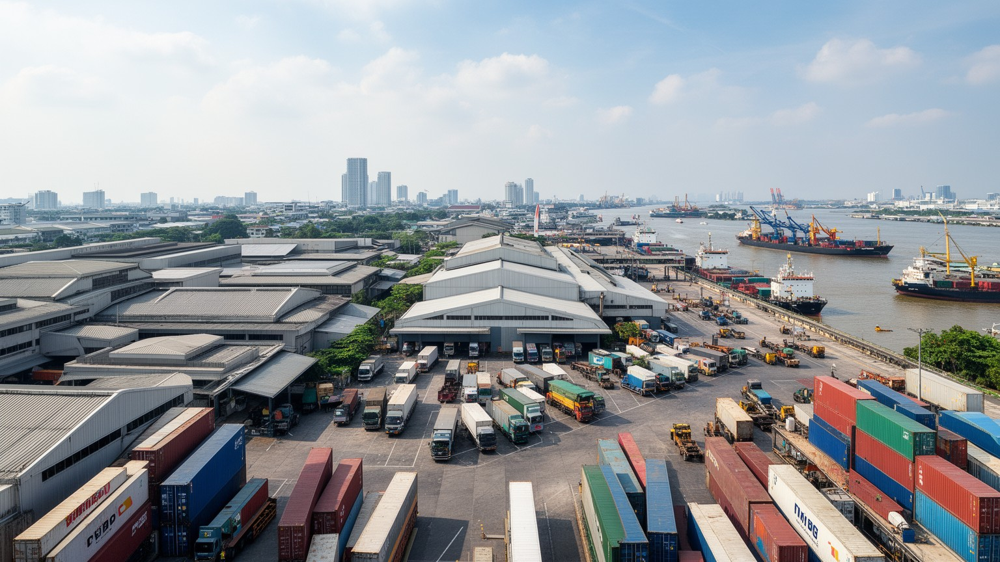
バンコク経済は中心部の金融、行政、商業だけでなく、周辺県に広がる工場、倉庫、港湾、空港、幹線道路、農産物流通と一体で動いている。自動車、電子部品、食品加工、衣料、建材、化学、医療サービス、デジタル産業は、首都の消費市場と輸出ネットワークを結びつける。レムチャバン港やスワンナプーム空港、ドンムアン空港、工業団地への道路は、タイ湾と内陸部、周辺国への物流を支える重要な線である。企業本社や銀行、広告、法律、大学、政府機関は都心に集まり、現場の製造や配送は郊外と地方、移民労働に大きく依存する。ミャンマー、カンボジア、ラオスから来た労働者は建設、家事、食品、工場、サービス業で都市を支えるが、言語、在留資格、賃金、住環境の不安を抱えやすい。経済成長の数字は、観光客の消費や高層オフィスだけでは説明できない。バンコクは東南アジアの市場をつなぐ結節点であると同時に、柔軟で安い労働力に頼る都市でもある。物流の速さを評価する時には、長時間運転、倉庫の暑熱、非正規雇用、災害時の供給網の脆さも同じ地図に置く必要がある。食品市場や港湾の動きは、地方の農家や漁業者の収入とも結びつき、首都の需要が国土全体の生産を動かす。災害や国境情勢が変われば、工場の部品、食材、燃料、人の移動が連鎖して影響を受ける。経済の中心性は便利さだけでなく、危機が来た時にどれだけ広い範囲へ波及するかにも表れる。
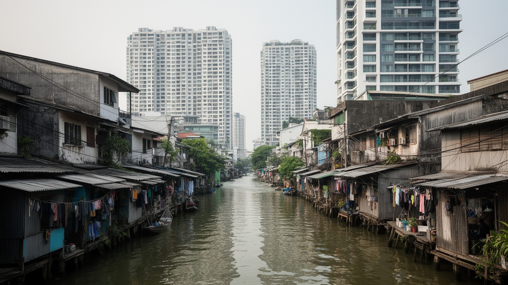
バンコクの住宅風景は、高層コンドミニアム、郊外の分譲住宅、古いショップハウス、運河沿いの集落、労働者宿舎、寺院周辺の路地が混在する。鉄道駅の近くでは投資用の住宅開発が進み、外国人駐在員や中間層向けの設備が整う一方、低所得者は家賃の安い郊外や洪水に弱い土地、通勤に時間のかかる場所へ追いやられやすい。路地の生活は密度が高く、屋台、洗濯物、バイク、祠、共同の椅子、家族経営の店が近い距離で並ぶ。そこには相互扶助と親密さがあるが、火災、排水、衛生、法的な土地権利の不安もある。都市再開発は景観を整え、交通利便性を高めるが、古い住民や小商いが移転を迫られることも少なくない。住宅は単なる寝る場所ではなく、職場、家族関係、宗教行事、近所づきあい、子どもの学校、老後の支えを結ぶ基盤である。バンコクを豪華なホテルやモールだけで見ると、都市を動かす人びとの住まいが見えなくなる。公平な都市を考えるには、駅前の開発価値だけでなく、暑さや洪水に耐える住宅、家賃の安定、移民労働者の住環境、路地の公共サービスを同じ重要度で扱う必要がある。家族が同じ部屋で商売と生活を重ねる住まいでは、住宅政策と小規模経済を切り離せない。再開発後に美しい建物が並んでも、元の住民が戻れなければ、街の記憶と支え合いは失われる。住まいの安定は、子どもの通学、病院への距離、寺院や市場との関係まで左右する。
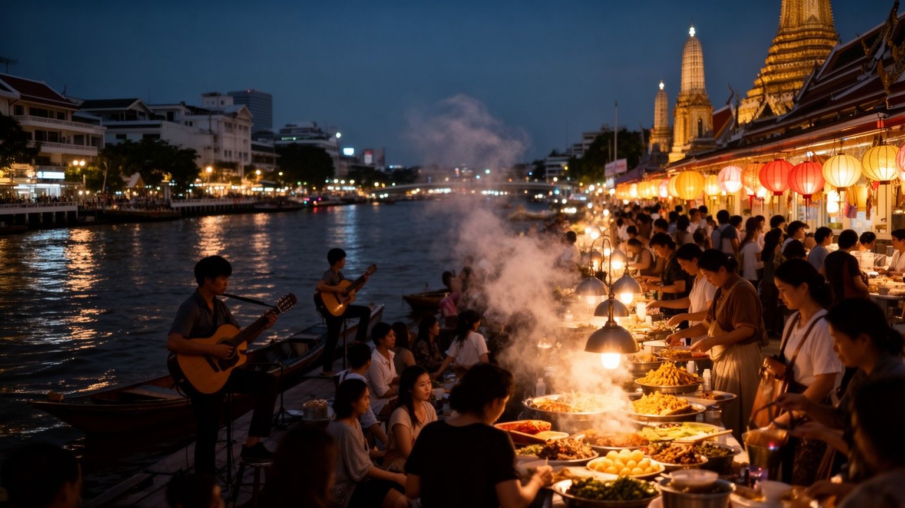
バンコクの文化は、王宮や寺院の古典的な美だけでなく、映画、テレビ、ポップ音楽、BLドラマ、現代美術、デザイン、ファッション、クラブ、ライブハウス、独立書店、カフェ、コスプレイベントにも広がる。ショッピングモールは単なる買い物の箱ではなく、若者が涼み、食事をし、映画を見て、オンライン文化と現実の交流をつなぐ公共的な空間になっている。夜の街は観光客向けの歓楽だけではなく、仕事帰りの食事、音楽、LGBTQコミュニティ、創作の場、移民の社交、非正規労働の現場を含む。華やかな夜景には、照明、警備、清掃、接客、音響、配達、交通の仕事が重なっている。表現の自由や政治的な風刺は、王室や軍、保守的な価値観との関係で慎重さを求められることもあり、文化は常に自由と制約の間で動く。バンコクの魅力は、伝統と現代を観光用に並べるだけでは説明できない。暑い日中を避けて夜に活動する生活リズム、モールと路地の往復、オンラインで広がるファンダム、ローカルな音楽シーンが都市の感覚を作る。文化を読むことは、誰が集まり、どの場所なら安心して表現でき、どの消費が創作を支えるのかを見ることでもある。若い制作者は検閲や市場規模、生活費の高さと向き合いながら、SNSや小規模イベントで観客を作る。夜の自由さには安全や搾取の問題もあるため、文化を楽しめる都市は働く人の権利も守らなければならない。商業的な成功と小さな実験の両方があるからこそ、都市文化は厚みを保っている。
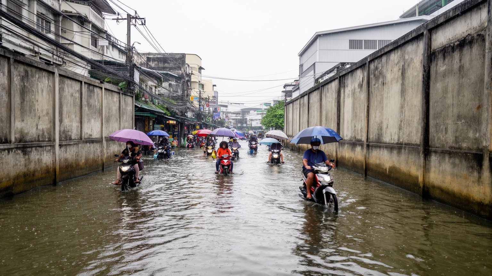
バンコクの気候リスクは、暑熱、豪雨、洪水、海面上昇、地盤沈下が重なる点にある。雨季の激しい雨は道路や地下空間をすぐに混乱させ、チャオプラヤー川の水位上昇や潮位の影響は低地の排水を難しくする。過去の大洪水は工業団地、住宅、交通、国際供給網に大きな被害を与え、首都圏の脆弱さを世界に示した。地盤沈下は地下水利用や都市開発の歴史と関係し、海面上昇と組み合わさると長期的な危険を増す。猛暑は屋外労働者、屋台、配達員、高齢者、低所得世帯に強い負担をかけ、冷房を使えるかどうかが健康と生活費を分ける。公園、街路樹、運河再生、貯留施設、排水ポンプ、防潮対策、建物の省エネは、景観整備ではなく生存のためのインフラである。だが、大規模な治水事業は周辺地域に水を押し出すこともあり、誰を守り、誰が負担するのかという政治的な問いを含む。バンコクの未来を考えるには、観光や投資の成長だけでなく、低地都市としてどの地域をどう守り、住民が暑さと水に適応できる条件を整えるかが中心になる。対策は技術だけでなく、避難情報の届き方、保険、家賃、地域の助け合いとも関わる。水門や堤防が整っても、最も弱い住宅に住む人が取り残されれば、都市全体の適応とは言えない。気候リスクは未来の話ではなく、雨の日の通勤や屋外労働、家計の電気代としてすでに現れている。
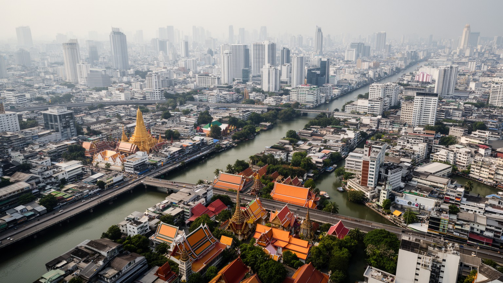
バンコクは、王権の象徴、上座部仏教の儀礼、東南アジア大陸部の物流、世界観光、屋台の食、移民労働、高層住宅、運河、洪水リスクを一つの都市圏に抱えている。金色の寺院とガラスのモール、川の船と高架鉄道、路地の屋台と国際ホテル、政治デモの交差点と静かな祈りの境内は、互いに離れた風景ではない。観光客が感じる柔らかさや楽しさは、長時間働くサービス業、非公式な小商い、家族の支え、低賃金の移民労働、暑熱の中の移動によって支えられる。政治を読むには王宮や軍だけでなく、広場、大学、SNS、地方から来た住民の声を見なければならない。経済を読むにはGDPやホテル稼働率だけでなく、屋台を撤去する規則、駅前の家賃、物流倉庫の労働、洪水で止まる道路も見る必要がある。バンコクは快楽的な観光都市として消費されやすいが、実際には水、信仰、権力、労働、階層、気候変動が濃く絡み合う首都である。都市の魅力は矛盾の少なさではなく、矛盾を抱えたまま暮らしが続く強さにある。川沿いの風、寺院の鐘、渋滞の熱、夜市の匂いを同じ地図に置くと、バンコクの輪郭は立体になる。その複雑さを受け止めるほど、都市は単なる名所の集合ではなく、住民が毎日交渉しながら作る環境として見えてくる。バンコクを歩くことは、華やかさの奥にある制度と暮らしの結び目を読むことでもある。短い滞在でも、王宮、運河、駅前、路地、市場をつなげて見ると、首都の矛盾と活力が同時に見える。